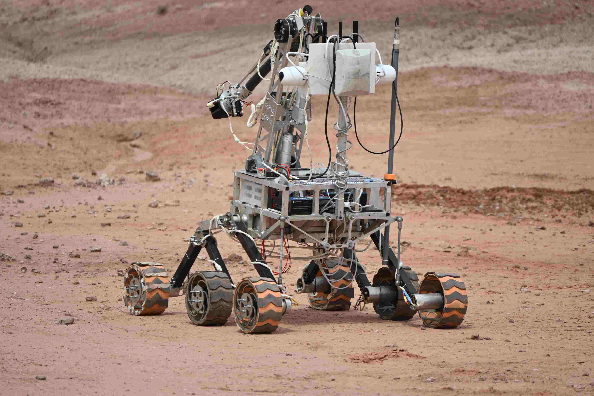

The IRC - "INTERNATIONAL ROVER CHALLENGE" is a worldwide competition that challenges university students to test themselves against the best teams in the world.
The purpose is to encourage some of the best teams to learn about the complications involved in space missions, with the objective of making a rover perform specified missions and operations in Mars-simulated conditions in a one-of-a-kind arena.

Who organises it?
It is an initiative by the SPACE ROBOTICS SOCIETY (SPROS) with the aim to provide an interdisciplinary engineering experience while nurturing both practical and soft skills.
Keeping the SPROS’s aim to build a B.O.L.D. (Brighter, Open, Limitless and Developed) future in focus, they give the participating students a glimpse of an actual space mission.
The reach of IRC
Since its launch, the IRC has scaled up significantly. Today it has more than 50 teams participating, comprising over 1000 students. This highlights the success of SPROS in its aim through the IRC and hence its widening popularity.
MRT is proud to be competing in such a wide-scale initiative.
Preparation for IRC 2025
We are a team of more than 45 students working towards the same goal. Amaran, the latest entrant in our rover family, has emerged as a result of our hard work and sincere efforts over the past year. Amaran has been developed with many upgrades in its design and capabilities, further solidifying our goal of achieving new heights every year.